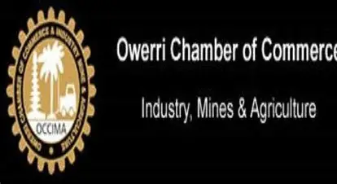

.webp)
Welcome to Imo State Chamber of Commerce
Your gateway to business success in Imo State. Discover local events, network with fellow entrepreneurs, access our business directory, and support local economic growth.
Join the ChamberAbout Us
The Imo State Chamber of Commerce serves as a vital resource hub for businesses in Imo State and surrounding areas. Our mission is to provide information on local events, host networking opportunities, create comprehensive business directories, and encourage local shopping. We aim to promote local economic growth, support local businesses, and foster a strong sense of community among entrepreneurs.

Member Spotlight
Maria's Boutique
Maria, a 35-year-old entrepreneur, owns a small boutique shop in Owerri. Through our chamber, she has found valuable networking opportunities and business resources to grow her business.
Upcoming Events
- Business Networking Mixer: April 15, 2026 - Connect with local business leaders.
- Economic Development Workshop: May 10, 2026 - Learn strategies for business growth.
- Community Service Day: June 5, 2026 - Give back to the community.
Become a Member
Join our chamber to access exclusive benefits, networking opportunities, and resources to support your business.
Apply Now